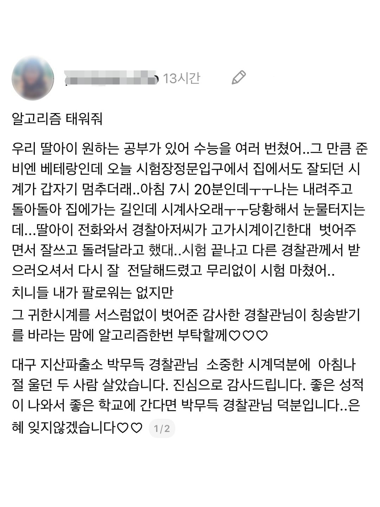
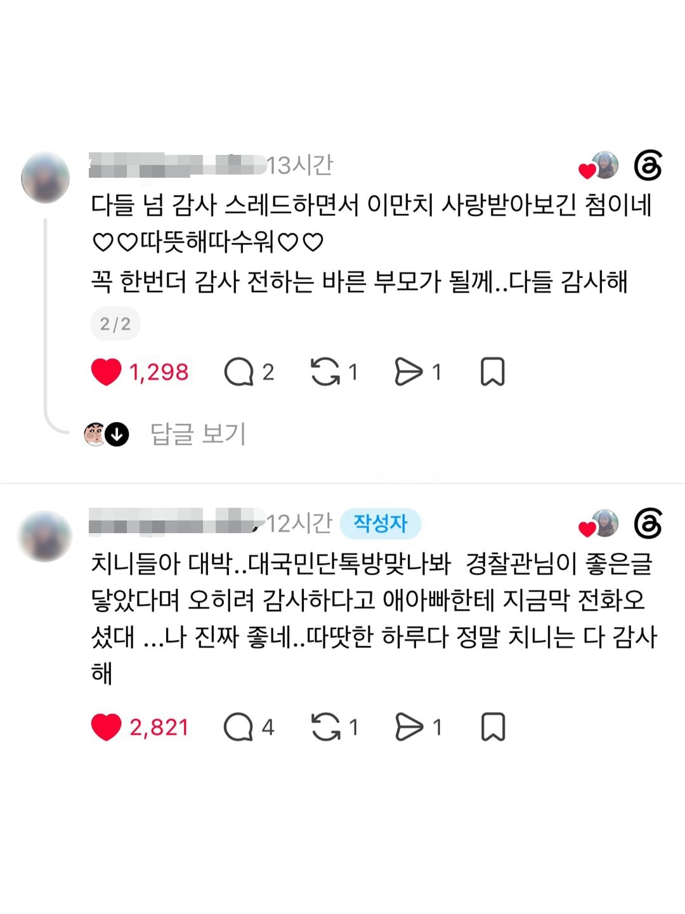
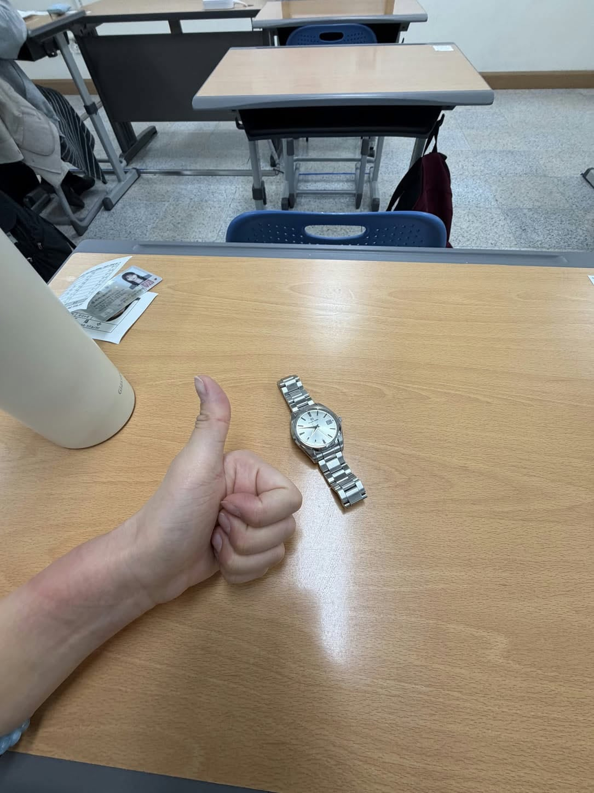

그랜드 세이코 오너의 품격



그랜드 세이코 오너의 품격
보통 예물을 많이함
나도 예물로 400주고 맞춤정장 했는데 6년째 잘입는중 20년 더입을 예정
직업이랑은 별개인거지 뭐
오토마타갤에 브라이틀링 시계만 열몇점 가진 경찰도 있음ㅋㅋㅋㅋㅋ
그세 쿼츠정도면 공무원이 너무 크게 부담될만한 가격도 아니긴 해. 나도 내 월급 내에서 시계사는걸로는 부담 안갖겠거니하고 매달 조금씩 돈 모아서 시계질 하니까ㅋㅋㅋ 막말로 새 컴퓨터 맞출돈 그냥 컴 안사고 그랜드세이코 시계 사면 얼추 비슷함
???: 이제 이 이시계는 제껍니다
보통 예물이 많지